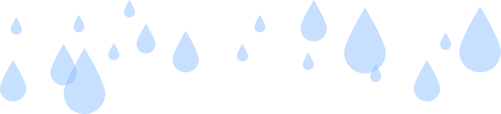

Milluv - El recolector de agua de lluvia urbano
________________________________________________________________
●
Milluv es un proyecto que propone aprovechar
un recurso preciado pero inutilizado, que es la lluvia.
En vista de la calidad del agua de grifo y las sequías futuras que se anuncian,
es importante empezar a desarrollar alternativas de suministro de agua.
Hemos diseñado un dispositivo que colecta agua de lluvia en pequeñas cantidades,
que no requiere de gran espacio ni instalación. Con la esperanza de
demostrar y promover los beneficios de este recurso.
●
¿Porque agua de lluvia?
________________________________________________________________
●
●
Realizamos una investigación y descubrimos que los depósitos de agua,
que abastecen de agua corriente a la ciudad de Barcelona, están muy contaminados.
Se necesitan grandes infraestructuras y energía para intentar depurarla, pero incluso
con estos tratamientos, los micropoluantes siguen presentes en el agua que bebemos.
¿La lluvia podría ser una alternativa
de abastecimiento de agua en Barcelona?
●
●
________________________________________________________________
●
Recogido_____________ &
●
En uso_________________

Nuestro grupo objetivo de usuarios son personas conscientes de la escasez de agua, que viven en un edificio en la ciudad y sin un gran jardín o patio propio, conscientes del medio ambiente y buscando aumentar sus buenos hábitos/acciones.
●
●
Para destacar del típico envase de plástico y seducir a los usuarios, apostamos por un producto estético que es una mezcla de estilo artesanal y contemporáneo, un bello objeto para estar orgullosos de mostrar en su balcón y compartir los beneficios que se pueden obtener con él.●
●
________________________________________________________________
●
●
●
Es un dispositivo de activación manual: el consumidor tiene que doblarlo y desplegarlo para recoger la lluvia, de esta manera el usuario tiene un mayor control y conciencia sobre la calidad del agua que recoge y consume.●
Diseñados en materiales artesanales con formas geométricas, apostamos por la sencillez y la pureza de las formas. Milluv está compuesto por un contenedor, un filtro depurador y un colector de lluvia extraíble. El usuario dispone de una colección de accesorios para elegir el que mejor se adapte a su espacio.________________________________________________________________
●

●
Con este proyecto manifiesto,
se sensibiliza a los usuarios sobre este recurso olvidado,
con objetivo final de incitarles a reclamar instalaciones comunitarias de recoleción
de agua de lluvia que permitan a todos aprovechar
este presente de la naturaleza.